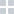

<ng-template #tabHeader>
  <div class="tabs-container">
    <ul>
      <li *ngFor="let tab of tabs" (click)="selectTab(tab)" [ngClass]="{'--selected': tab.tabIsSelected}">
        {{tab.title}}
      </li>
    </ul>
    <div class="tab-view-options">
      <label for="grid-view">
        <input type="radio" id="grid-view" name="view-type" checked>
        
      </label>
      <label for="list-view">
        <input type="radio" id="list-view" name="view-type">
        
      </label>
    </div>
  </div>
</ng-template>

<ng-container [ngTemplateOutlet]="tabHeader"></ng-container>

<ng-content></ng-content>
